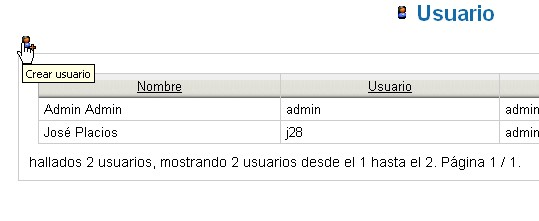

Gestionar Usuarios |
La funcionalidad de gestionar usuarios está
disponible para aqellos que pertenezcan al grupo "Amministrador".
Para ello, seleccionar en el menú principal
Amministración --> Uusarios.
Se muestra la lista de usuarios. En cada uno, estás
disponibles varias operaciones indicadas mediante los iconos:
Modificar, Cambiar contraseña y Anular.
Añadir un Usario
Accede a la página de gestión de
usuarios: selecciona en el menú principal
Administración --> Usuarios.
Seleccionando el icono Crear usuario se
muestra el formulario de inserción de un nuevo usuario.

El formulario de inserción contiene todos los datos
relacionados con un cierto usuario.
Algunos datos son obligatorios (indicado mediante el símbolo
asterisco (*)), en particular:
- Nombre del usario
- Contraseña
- Nombre
- Apellidos
- Lenguaje
- Grupos de pertenencia
Cada usuario puede pertenence a uno o más
grupos. El criterio de seguridad está siempre expresado en
relación a los grupos y nunca en base al usuario.
Para seleccionar más grupos, presionar la tecla
MAYÚSCULAS y con el ratón hacer click sobre
varios grupos.
Una vez realizada la selección, pulsar el boton Salvar para
confirmar la operación de creación del nuevo
usuario.
| El modelo de seguridad implementado en el sistema consiste en aplicar una política de seguridad en base a la visibilidad o no de los documentos y de otras áreas de la aplicación. Estos criterios de seguridad se expresan únicamente en relación a los grupos, por consiguiente los usuarios heredan los privilegios de acceso asignados al grupo del cual forma parte. | |
Modificar un Usuario
Los datos personales de un usuario pueden ser
modificados por aquellos usuarios que tengan derecho de
administración y por el usuario mismo.
Todos los datos se pueden modificar, salvo los concernientes a
contraseña o los grupos de pertenencia (esta
última opción se encuentra disponible
sólo para los usuarios del grupo Administración).
Accede a la página de gestión de usurarios:
Administración --> Usuarios.
Cualquier elemento de la lista tiene un icono que permite su
modificación o su anulación.
Haciendo click sobre el icono "Modificar usuario" se
visualiza un formulario igual que el descrito para la
inserción: solamente que, en este caso, se habrán
añadido los datos del usuario sin poner modificar la
contraseña.
El icono siguiente: Cambiar contraseña permite modificar
sólo la contraseña del usuario, mientras que la
palabra Cancelar permite la anulación del usuario.
Un usuario que no sea administrador y que quiera modificar su propios
datos, lo podrá realizar utilizando la ruta: Datos
Personales --> Modificar Datos.
Para cambiar la propia contraseña, bastará con
que se acceda a la función Datos Personales -->
Cambiar contraseña.